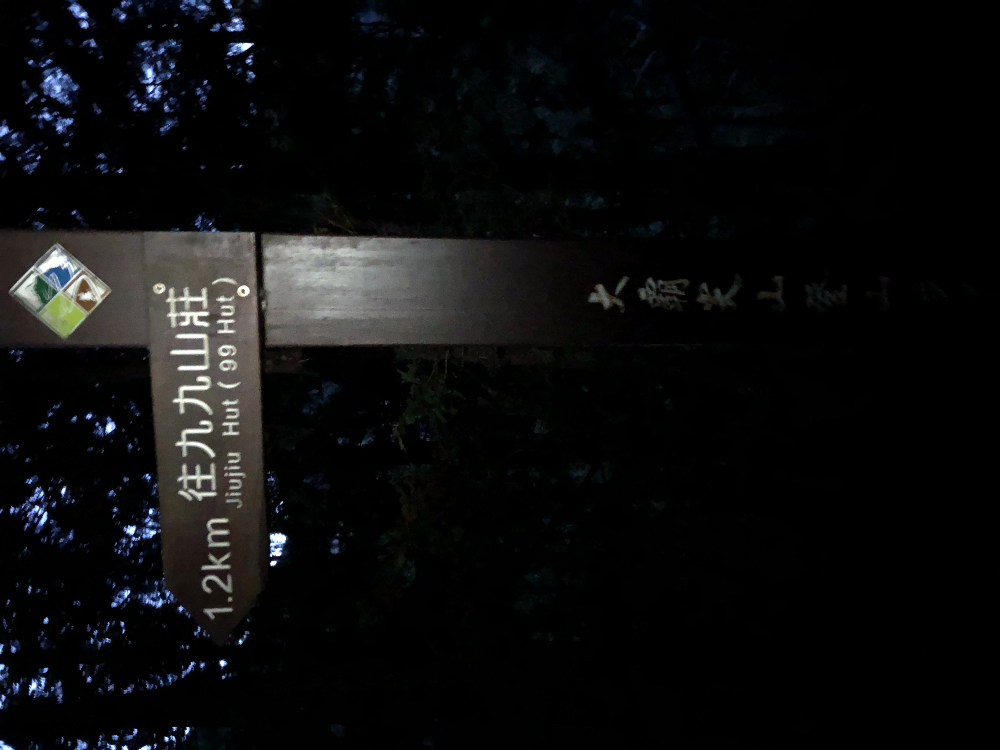
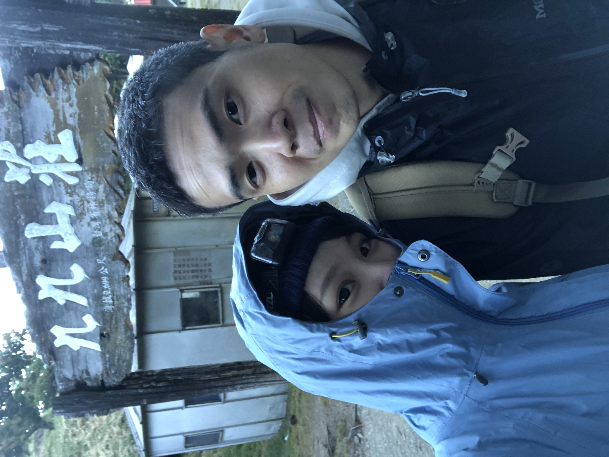
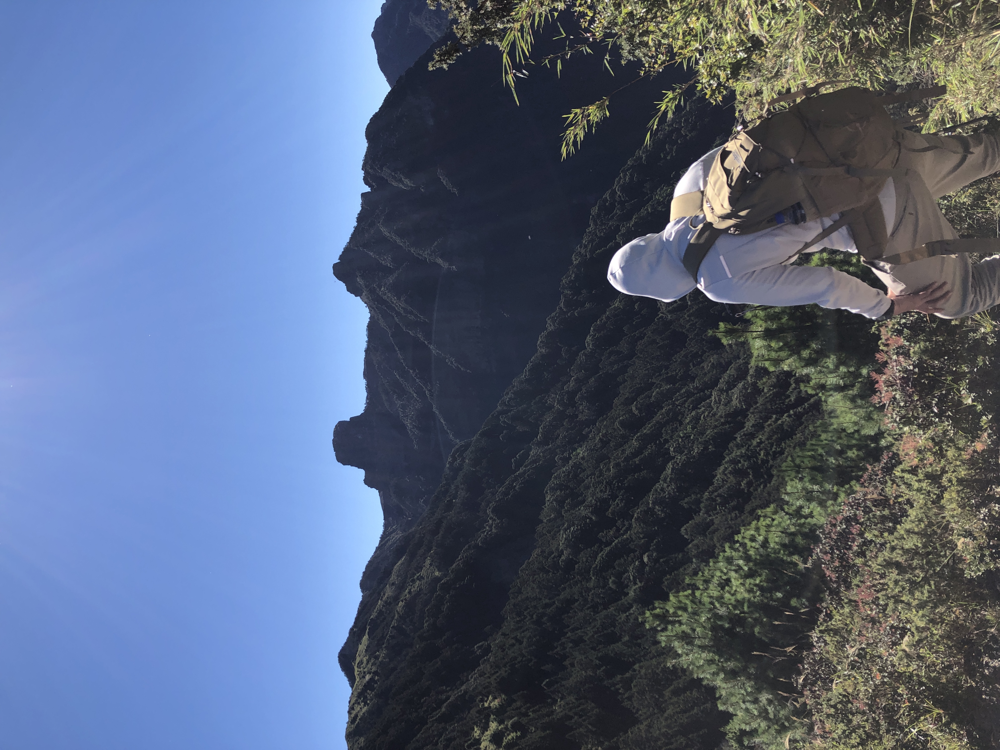
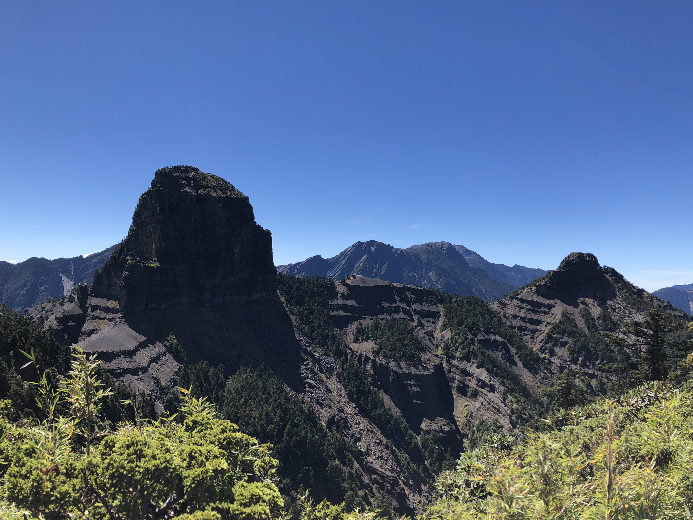
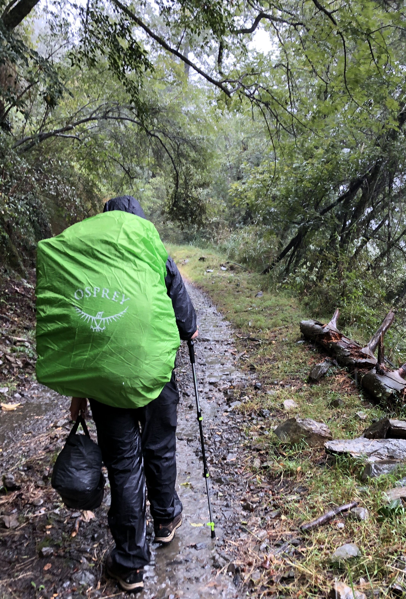
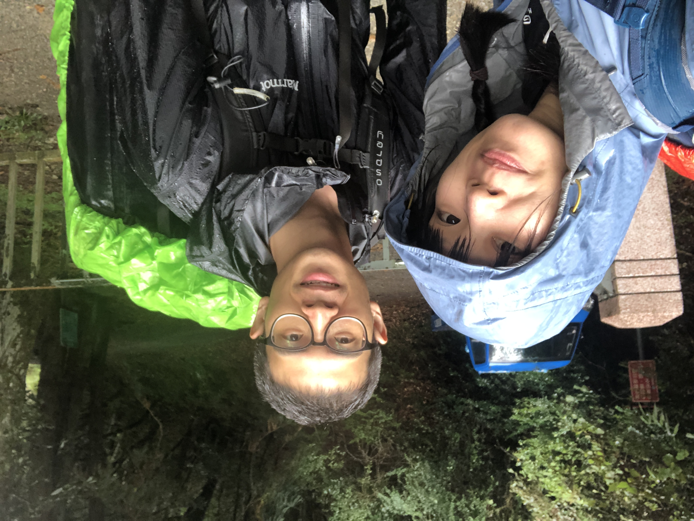

大霸尖山
探訪世紀奇峰，大鹿林道上大霸尖山

08:30
大霸尖山海拔3492公尺，屬於雪山山脈，是聖稜線端點2之一， 因山勢磅礡奇特，而有「世紀奇峰」之美譽，自古是泰雅、賽夏兩原住民族的聖山。

09:15
位於觀霧的大鹿林道東線，14.5K 的地方，有著一座美麗的小瀑布「東線瀑布」。

10:30
17K 有一個反光鏡，拉繩下切可直下馬達拉溪橋。如果不選捷徑岔路下切，林道大約要再踢2K，約須30分鐘，走捷徑只需要10分鐘。帥如我哥，當然選擇走完全程！

10:30
至少半年沒有摸黑攻頂了吧，想不到再一次摸黑就是陡上 4K 的考驗⋯⋯

10:30
我們是誰？我們在哪？九、九、山、莊！紀錄一下我與帥哥哥。

10:30
好的，正當頭腦混頓之際，太陽出來了，霸也終於出來了。追得好苦，但好帥（差哥哥一點）。

10:30
傳說中，五佰元鈔的拍攝地點；傳說中，我跟哥哥合影的地方；沒什麼，就是帥！

10:30
下雨了，颱風靠近了，真正的考驗來了。

10:30
來的時候輕輕鬆鬆，回程步步驚心，最狼狽的一次山行 Get~ Love you!